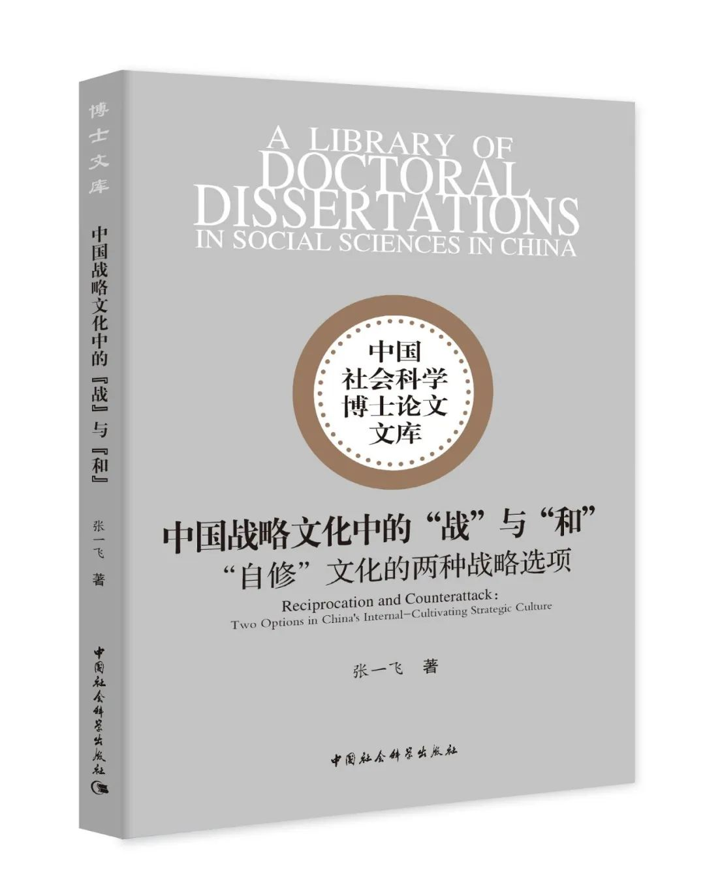

收录于合集

新书简介

点击底部左下角 “阅读原文” 获取购书链接
《中国战略文化中的“战”与“和”： “自修”文化的两种战略选项》
中国社会科学出版 社
2020年11月版
张一飞 著
定价：69.00元
ISBN：978-7-5203-7089-9
推荐语
中国业已持续数十年的和平崛起不仅有赖于国家战略的合理运筹，同时也有赖于运筹战略的文化土壤。历史上无数大国崛起进程或功败垂成，或盛极而衰，其背后原因并非决策者制定了非理性战略，而恰恰是因为所谓的“理性战略”与其民众所能接受的战略习俗相去甚远，或者其战略习俗本身便蕴含了崛起失败的文化基因。因此，深究战略文化，或曰民众的战略心理依赖，不仅是一个学术问题，更是一个政治问题和战略问题。
本书结论部分提出的“人即国家”“国家即民心”“民心即文化”的三环逻辑，是寻求“古老智慧”之“现代升华”的一种尝试，这还有赖于更多中国学者不断对此提出批评，提出新的问题，开拓更多中西方文化的融合空间。在当下中国处于对外战略大转型的历史阶段中，这将是一种尤为宝贵的学术意识。——摘自本书“他序”，王帆（外交学院副院长、教授）
作者介绍
张一飞，国际关系专业博士，中国社会科学院美国研究所战略研究室助理研究员。主要研究方向为国际安全、战略文化与中美关系。在《当代亚太》《国际经济评论》《国际展望》《当代美国评论》等期刊发表多篇学术论文。
作者视频介绍 ↑↑↑
内容简介
通过发掘先秦诸子“主战”与“主和”两种战略思想体系的共同特征，本书认为中国战略文化是一种由“兼顾实力和道德的战略资源积累”“被动反应式的战略资源使用”以及“同质、适度的反应原则”构成的，呈现出体系化特征的“自修”文化模式。中国历史上与此模式相符的大战略会因得到国内民众支持而最大程度地实现国家安全和经济发展；与之偏离或相悖的模式，则会引发战略透支或战略闲置，并受到国内失序的惩罚。对西汉和北宋的历史观察进一步验证了“大战略与‘自修’文化模式相符程度”和“国内发展有序性和可持续性”之间的因果联系。
名人推荐
中国古典战略思想是当下中国战略的重要思想源泉之一，了解中国战略文化就是了解中国独特的和平崛起路径。在中美竞争日趋激烈的背景下，张一飞博士的作品是中国完善战略自知、诠释对外政策的系统性成果，中国传统文化与战略研究爱好者不可错过此书。——倪峰（中国社会科学院美国研究所所长、研究员）
“兵者，国之大事，死生之地，存亡之道，不可不察也。”对战争与和平的认识，在任何民族思想宝库中，都是最璀璨的组成部分之一，也是不同的文明存在差异的重要原因之一。张一飞博士的力作，为我们站在百年未有之大变局的时代门口，回首民族之所来，展望国家之所往，开启了一扇崭新的观察之窗。相信本书对关心国家对外战略的决策者、实操者、研究者，直至广大读者，均有所广益。——叶海林（中国社会科学院亚太与全球战略研究院副院长、研究员）
本书提出的“人即国家”“国家即民心”“民心即文化”三者逻辑缜密，在移动互联网快速发展的今天，全球各地通过人工智能、大数据、物联网、5G等技术相互连接，缩短了物理空间的距离，为中西方文明相互借鉴、融会贯通提供了更多可能。本书介绍的中国战略文化对于当下越来越多的走向海外发展的互联网企业有诸多借鉴意义。——翟尤（腾讯产业安全中心首席研究员）
书 评
中国的战略的“自画像”：
评张一飞新著《中国战略文化中的“战”与“和”》
作者：姜 鹏
（中山大学国际关系学院副教授，国政学人青年学术顾问）
向上滑动阅览
新古典现实主义对结构现实主义理论的诟病之一就是后者所主张的“体系权力结构决定行为体战略偏好”的结论忽略了国家这一中介变量的重要作用。而在国家决策层面的影响要素中，一国特有的战略文化无疑在其战略辩论全过程均起着直接或潜移默化的影响。战略文化所建构的价值取向激励着决策者与利益集团去追求一些东西，同时也通过“文化负面清单”的形式约束决策者们的战略选项。一个陷入“主战文化”的国家会压抑社会中保守内向的和平主义力量，甚至将在困境中谋求和谈也视作不可接受的耻辱；一个陷入“主和文化”的国家会压抑社会中外向进取的扩张主义倾向，甚至连公开探讨潜在冲突的可能性也被视作对话的禁区。鉴于大国对体系和平与秩序维护起着重要的作用，而战略文化又对战略行为起着根本的影响，因此伴随着中国的崛起，关于中国战略文化究竟是好战还是好和一直是国际社会中众说纷纭的话题。
在中国漫长历史所记述的“判例法”中，对于“战”与“和”的战略思想与经验案例可谓俯拾皆是。甚至是同一个朝代的不同阶段都可能呈现出明显不同倾向的主导性战略文化。例如，明朝的开国皇帝朱元璋他本身就是元朝的子民，他生长于蒙元国家自然也内化了草原游牧的蒙古帝国的战略文化。这种相近的战略文化与作战模式一直延续到具有长期在漠北作战的明朝第三代皇帝朱棣。因此，当明朝前期同元军作战时，呈现出的本质上是“游牧战略”对“游牧战略”的互动模式。而朱棣之后的皇帝由于生长于深宫之中并重新接受整体的儒家文明教育，没有内化游牧文明的战略文化，因此，明朝中后期与北方少数民族的作战又蜕变成了传统的“保守内向的农耕文明”对“进攻外向的游牧文明”之间差异性战略文化的对抗。因此，对于中国战略文化的阐释往往呈现出就具体历史阶段一事一议的方法，或选择裁剪历史的方式把支持自己观点的案例挑出来，同时对不支持自己观点的案例熟视无睹，以至于上述两种方式都无法从宏观层面对中国战略文化的本质加以总结概括。
前期关于中国战略文化研究的方法与观点主张本身无可非议，因为理论往往强调在片面中谋求深刻。但如果把这些观点迥异甚至彼此矛盾——不论是从观点主张的同一性角度，还是从诠释现实政策的合理性角度，对于中国战略文化的研究要么突出法家、兵家或纵横家思想中的“以战为常”特征，要么突出儒家、道家或墨家思想中的“以和为贵”特征——的学说都订在一起，则不仅可能导致我们在获得灵活性的同时彻底丧失对自身战略文化的认识机会，同时也将导致我们在主战文化衍生的战略透支与主和文化衍生的战略闲置两个极端之间无所适从。张一飞博士的研究起点正是直面了这种长期存在却又缺少耐心以至于熟视无睹的困惑。
理论家之所以能够成为理论家不仅仅是因为他看到了存在的问题，更在于他愿意并有能力通过自身的努力和思考去解决问题。阅读《中国战略文化中的“战”与“和”》一书可以发现，作者知识结构极其庞杂，正是具备了这种兼容并蓄、海纳百川的知识体系才能打通中国古典政治学说之间千百年来固化的森严壁垒并在博观约取间实现对“儒法结合的内政”、“礼兵杂糅的外交”与“分合交替的态势”的自由驾驭。通过观察战略文化的内省——作者将其表述为“文化的自修进程”——张博士发现了主导中国战略文化的核心变量并结合汉宋两朝的通史对其发挥作用的内在机制加以鞭辟入里的阐发。这种宏大历史叙事下的无差别案例论证让读者无不感受到作者年纪轻轻却显露出一派宗师气象的深厚功力。
更为可贵的是，作者对历史的分析并没有走进蛀书虫一样的窠臼之中，而是做到了“从当今之门达到往昔之地”的时空连接。看似张一飞博士在一页页地著着历史文化，但却在翻页的纸缝间却分明透出了对当今中国战略文化内省与自修的深刻感悟。作者用东方的哲学与文字为我们刻画了中国文化的一幅“自画像”。我始终坚信，中国学派的成熟不仅体现在其自觉地运用中国历史，而更应体现出其自觉地向世界呈现中国式的思考逻辑。张一飞博士书中带有的这种明显带有外交学院建构主义印记的思维方式将为今后中国学派的发展提供有力的支撑。
认识别人需要智慧，认清自己需要勇气。张一飞博士的这本书其本质是一张中国战略的“自画像”。它不是《菊与刀》式的由外而内的感知化描述，而是由内而外的内省式反思。“跨东西文化，著天下文章”是我对这本书所具有的文化内涵的根本评价。当我被一步步吸引并走入他的这本著作后，仿佛是被带到了中国历史的山巅俯瞰那一个个朝代兴衰留下的沟渠及其整体叙事结构所呈现出的、若未能通过该书提供的范式则断然无法分辨的清晰认知。最后，我想让历史记录下来：随着时间的推移，这本书将在中国战略思想史上将得到越来越多的重视与认可。
赠书福利
请参与本次活动的读者转发本文至朋友圈 （不设分组） ，并于 12月3日中午12：00 前将截图发送至 “国小政” （下文获取二维码添加好友）以参与抽奖，将有机会获得本次推荐书目的 作者签名版 ！
点击左下角 “阅读原文” 可直接购书
**
**
**
**
**
**
添加 “国小政” 小助手 微信
👉👉